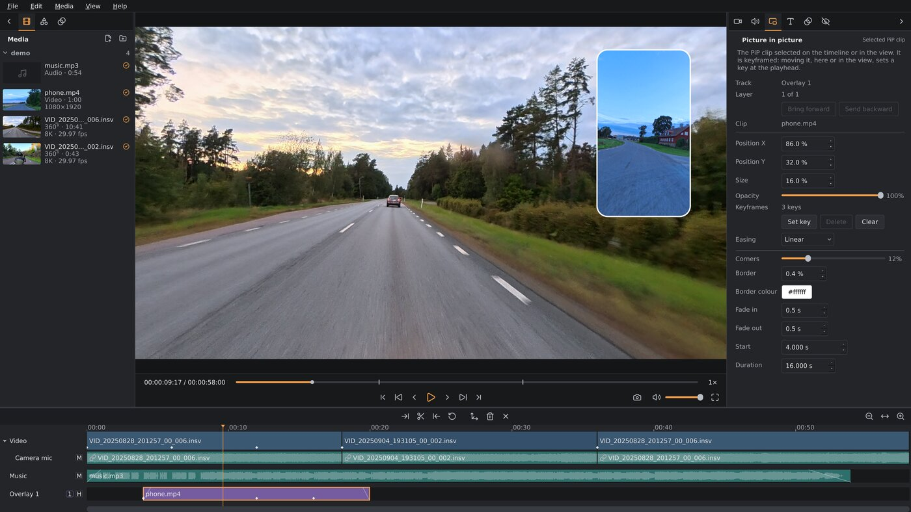

▶ Demo video: plate blur and stabilization on a motorcycle ride (YouTube, 3:41)
Status: “works on my computer”
A work in progress, built and tested on one machine: Debian Testing, an NVIDIA RTX 5070,
Wayland and Sway, with the other packages tested in containers on it. AMD and Intel GPUs are supported best-effort: a contributor has run it on
an AMD Radeon; Intel hasn't been tried. The releases are a .deb and a
tarball each for Debian Testing, Debian 13 and Ubuntu 26.04 LTS, and an AppImage for
other distributions with glibc 2.39 or newer (Fedora, Arch, openSUSE Tumbleweed, ...); other setups that meet the
requirements should work but haven't been tried. Found a problem? Report it on GitHub.
Questions, or want to talk? Join the Discord server.
The X5 is the camera it's built and tested on, and fully supported: every capture mode tried so far, I-Log through the camera maker's LUT, stabilization, lens guards and GPS. The X6, ONE X2 (5.7K) and Antigravity A1 (8K, 5.2K, 4K 100) are experimental: their clips open, stitch and export, tried on a contributor's or a few test clips; the README says what's still unchecked on each. Have another 360 camera? Support for other Insta360, DJI and GoPro cameras needs real footage to build on: sample clips wanted.
AI disclaimer: most of the code in this project was written with AI, using Claude Code with Claude Opus 5.5. The design, direction and testing on real footage are human.
Why
Insta360's own editor, Insta360 Studio, runs on Windows and macOS only. Linux has no way to edit 360° camera footage properly:
- Cameras like the X5 record dual-fisheye
.insvfiles. They need lens-calibrated stitching into a sphere before you can do anything with them. General players and editors can't read the calibration or the telemetry. - The camera's gyro/accelerometer data sits in a proprietary trailer at the end of each file. Without it there is no stabilization or horizon leveling, and 360° footage from a moving vehicle is hard to watch without that.
- The most useful part, interactive reframing, doesn't exist in Linux editors. Kdenlive and Shotcut are built on MLT, which has no concept of spherical video or of keyframing a viewing direction. A plugin wouldn't be enough, so this is a standalone application.
My use case is motorcycle footage from an X5 on a selfie stick. That footage needs lean-preserving stabilization that removes the shake but keeps the bike's roll in corners, a level horizon when you want one, and a quick way to pick where the camera looks at each moment.
Orbis Reframe doesn't use Insta360's Media SDK. An early prototype was built on it, but its Linux support (an Ubuntu 22.04 / CUDA build and a file-to-file stitch API) didn't fit an interactive editor on current Linux. So the container and trailer parser, lens calibration, fisheye→equirect stitch and gyro stabilization were reimplemented independently, from public documentation and from studying camera-produced files. The editor has no closed-source dependencies.
What it does
Reframing
Steer a keyframed virtual camera through the sphere: where it looks, how wide, and how wide views are drawn, all the way to tiny planets. Track subject follows a rider or a car for you, as keyframes you can edit, and split screen shows the road ahead and behind at once.
Stabilization
From the camera's own gyro: Lean follow removes the shake but keeps the bike's lean in corners, Horizon lock keeps the horizon level, Direction lock keeps the view pointing one way through bends.
Stitching
From the lens calibration in each file, or your camera's own, measured from a chart on your monitor. Where the lenses meet, their colours are blended as the light changes, and close things crossing the seam, the bike, the handlebars, your hands, aren't doubled.
Ride data
Speed, altitude, heading, lean angle and G-force from the camera's GPS and motion sensor, as dials, bars, a heading tape, a lean dial, a G circle or a route map, and titles with the recording's own clock and date.
Privacy blur
Number plates found on the GPU faster than real time and blurred on the sphere, so the blur stays on them wherever the view looks. Remove a false hit with a right-click, or box one the scan missed.
Sound
Wind reduction with a motorcycle mode that keeps the engine and turns down the wind between its harmonics, hiss and hum removal, and voice isolation with DeepFilterNet 3. The camera's mic and an external mic each get a track.
The result is a flat H.264 or H.265 video, made on the GPU's hardware encoder, 8-bit or 10-bit, in 16:9, 9:16, 1:1 or 4:3. Around that, what you'd expect from an editor: a multi-track timeline with trims, splits, speed and transitions, highlight marks from the camera and your own, a preview of each file before it goes on the timeline, picture in picture, titles, colour grading with LUTs for log and HDR footage, undo and autosave. Everything is in the user manual.
Planned: more 360° cameras as sample clips come in (Insta360 X4 and X3, DJI Osmo 360, GoPro MAX), a second 360° clip as an inset, an effects library, HDR export and video noise removal. Further out: face and object blur. The roadmap has the details.
360° video on Linux: questions
Can I edit 360° camera footage on Linux?
Yes, with orbis-reframe. The camera makers' own editors (Insta360 Studio, DJI Studio, GoPro Player) run on Windows and macOS only, and general Linux editors can't stitch the two lenses or read the camera's motion data. orbis-reframe does both and exports a normal flat video.
Which cameras work?
The Insta360 X5 fully; the Insta360 X6, ONE X2 and the Antigravity A1 drone experimentally. More 360° cameras follow as sample clips come in: Insta360 X4 and X3, DJI Osmo 360 and GoPro MAX are planned.
How do I open Insta360 .insv files on Linux?
Open the clip in orbis-reframe; it reads .insv files straight from the
camera's card, both lenses and the motion and GPS data, without converting them first.
Can I stabilize 360° footage with the camera's gyro on Linux?
Yes. orbis-reframe stabilizes from the gyro data recorded in the file, with a level horizon, a mode that keeps a motorcycle's lean in corners, or one that keeps the view pointing one way.
Which Linux distributions?
There are .deb packages for Debian Testing, Debian 13 and Ubuntu 26.04 LTS,
and an AppImage for other distributions with glibc 2.39 or newer (Fedora, Arch,
openSUSE Tumbleweed, ...). It needs a Vulkan GPU and a Wayland session.
Sources and thanks
Everything about the cameras' file formats (Insta360 X5, X6, ONE X2, Antigravity A1) was learned from interoperability documentation, published research and camera-produced files. No vendor's SDK or software was ever disassembled. The project's format notes mark every fact with where it came from and how well it's verified. We're grateful to these projects and people:
- Gyroflow and telemetry-parser by Adrian Eddy and contributors. telemetry-parser's Insta360 reader gave us the trailer record framing and type names, the protobuf schema of the metadata record, the raw-gyro scaling, the timestamp alignment, the X5 IMU orientation and the lens-profile construction. Gyroflow's approach to gyro stabilization (smoothing, per-axis strength, horizon lock, rolling-shutter readout time) is the model for our stabilization modes.
- ExifTool by Phil Harvey.
QuickTimeStream.pl(ProcessInsta360) gave an independent decode of theinsttrailer, which we checked our parser against byte for byte. The ExifTool forum thread on the “Parameters” field covers the short calibration string. - insv-stitch
by Benjamin Henriksson: the 56-token MEI calibration layout, sensor→video scaling, the
.insv.pbsidecar and the IMU→camera matrix for the X5. - Insta360: the X5 online manual (file naming, segmented recording) and Insta360 Studio, used as a visual reference for stitching and horizon leveling.
- TDK InvenSense: the ICM-40609-D datasheet for the IMU's full-scale ranges.
- Published methods: the unified omnidirectional (MEI) camera model (C. Mei & P. Rives, “Single View Point Omnidirectional Camera Calibration from Planar Grids”, ICRA 2007) for the fisheye lens model, and the Mahony complementary filter (R. Mahony, T. Hamel & J.-M. Pflimlin, “Nonlinear Complementary Filters on the Special Orthogonal Group”, IEEE TAC 2008) for fusing the accelerometer into the horizon reference.
- DeepFilterNet by
Hendrik Schröter and contributors (MIT / Apache-2.0; H. Schröter et al., “DeepFilterNet:
Perceptually Motivated Real-Time Speech Enhancement”, Interspeech 2023): its
DeepFilterNet 3 model runs the voice noise modes. FFmpeg's
afftdnfilter was a comparison reference, not built in. - Subject tracking combines OpenCV's CSRT tracker (A. Lukežič, T. Vojíř, L. Čehovin Zajc, J. Matas & M. Kristan, “Discriminative Correlation Filter with Channel and Spatial Reliability”, CVPR 2017), which follows the subject, with the VitTrack model from OpenCV Zoo (Apache-2.0), which checks each frame that it's still the same subject.
- Number-plate detection uses the YOLOv9-s plate model from open-image-models by ankandrew (MIT; C.-Y. Wang, I.-H. Yeh & H.-Y. M. Liao, “YOLOv9: Learning What You Want to Learn Using Programmable Gradient Information”, ECCV 2024), run on the GPU by ncnn.
Built with Qt 6, Vulkan, FFmpeg (demux, decode, hardware encode, audio, time-stretch), glslang (shader compiler), nlohmann/json, miniaudio (David Reid, Unlicense OR MIT-0; sound output), optionally OpenCV (analysis tools, subject tracking) and ONNX Runtime (the voice noise modes) and ncnn (Tencent, BSD-3-Clause; the plate scan), and Lucide icons (ISC license; the parts derived from Feather MIT).